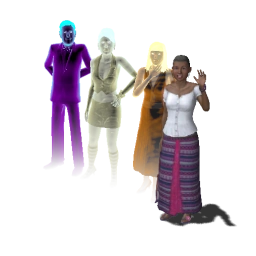

Família Caixão
A família Caixão é considerada a família mais famosa e global da série The Sims.
Existem pouquíssimos casos em que os Caixão não foram incluídos em algum jogo. Bem como sendo uma das poucas famílias que aparecem em todos os quatro jogos principais, The Sims, The Sims 2, The Sims 3 e The Sims 4, pelos menos um membro da família aparece também em The Sims para console, The Sims Bustin' Out, The Sims 2 para Game Boy Advance, SimCity 4, The Sims 2 para PlayStation portátil, The Sims Social e The Sims Móvel.
A árvore genealógica da família indica uma longa linhagem de ricos empresários, políticos ou cientistas. A maioria dos Caixão do sexo masculino são vistos em ternos e roupas de trabalho, enquanto as mulheres geralmente preferem os vestidos longos e elegantes.